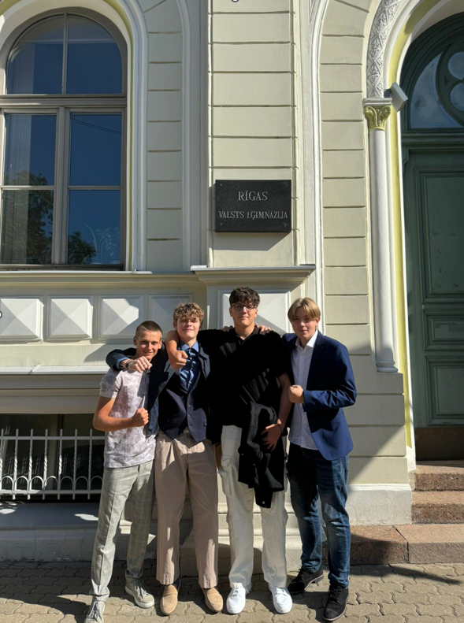
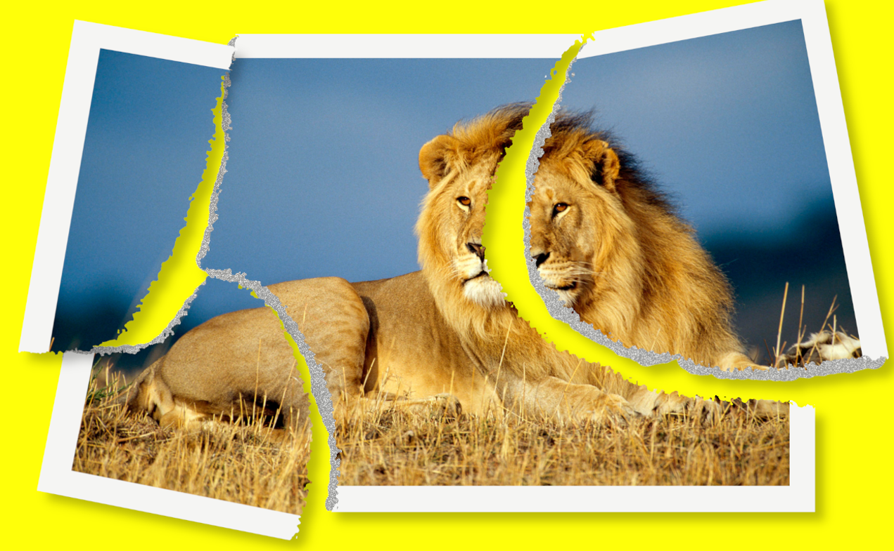
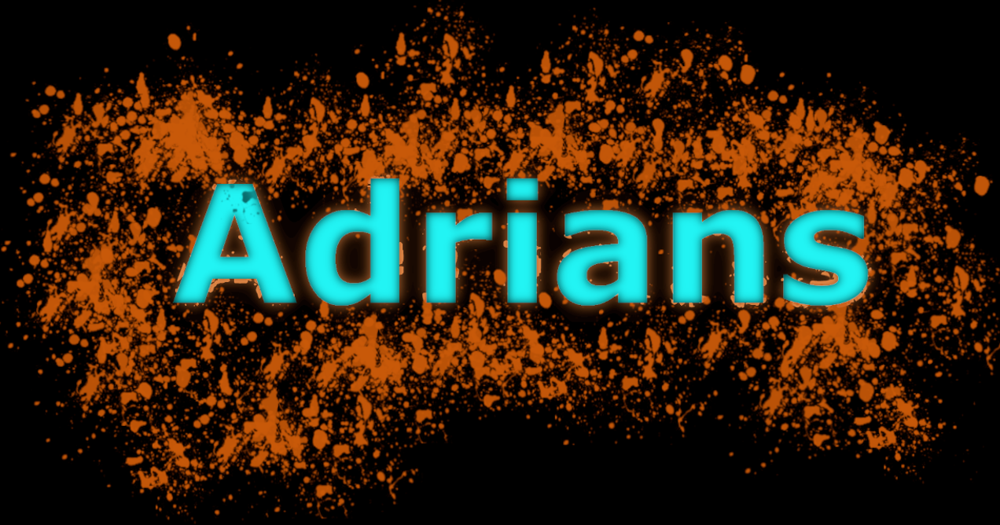

Mācību gadu mēs uzsākām ar GIMP, kas ir bezmaksas un atvērtā koda rastrgrafikas redaktors. Tālāk sekoja Word teksta redaktors dokumentu veidošanai — rakstu, ziņojumu, eseju, CV un citu tekstu formatēšanai. Tuvojoties gada izskaņai, mēs izveidojām sava biznesa ideju, šīs idejas logo un gala produktu- 3D puzles gabaliņu, kas tika izprintēts. Katram individuāli vajadzēja izveidot nelielu video par šo grupu projektu un paša izvēlētu tēmu par drošību internetā. Īsi pirms ziemas brīvlaika mēs sākām darboties MS Excel, kas ir tabulu un datu analīzes rīks.
GIMPā bija ļoti jautri strādāt mēs rediģējām dažādus attēlus, veidojām manipulācijas un grafisko dizainu. Mums bija iespēja izmēģināt tādas funkcijas kā slāņu atbalstu, krāsu korekciju, filtru pielietošanu, foto restaurēšanu un daudz ko citu. Noslēguma darbā par GIMP vajadzēja izveidot attēlu, savu vārdu un GIF animāciju pēc noteiktiem kritērijiem.
 Grupu projekts bija aizraujošākais darbs, kas mums bija jāveic. Sākumā bija jāsadalās grupās pa četri un jāizveido sava uzņēmuma logo. Mūsu uzņēmums bija vērsts uz mēbeļu ražošanu, tādēļ logo dizains bija saistīts ar to nozari. Noslēgumā bija jāizprintē sava uzņēmuma produkts ar 3D printera palīdzību. Papildu uzdevums bija videoklips izveide. Tās mērķis bija uztaisīt kvalitatīvu un uzjautrinošu video par manas grupas darba procesu, kurā būtu fotogrāfiju pārejas un apgriezti video fragmenti, reklāma par vienu no izvēlētajām datorikas tēmām un beigu titri.
MS Wordā mēs apguvām teksta ievadi un rediģēšanu, dokumentu formatēšanu, stilu un noformējuma izmantošanu, tabulu, attēlu un diagrammu ievietošanu, pareizrakstību un gramatiku, piedāvājot labojumus kļūdām, satura rādītāja un atsauču veidošanu.
MS Excel programmatūrā strādāt bija diezgan grūti. Tajā mēs apguvām datu ievadi un pārvaldību, piemēram, datu kārtošana un filtrēšana, meklēšana un aizstāšana. Iemācījāmies veikt pamata matemātiskos aprēķinus (saskaitīšana, atņemšana, reizināšana, dalīšana) un lietot iebūvētās funkcijas, piemēram: SUM, AVERAGE, IF, COUNT, COUNTIF u.c. Kā arī veicām datu analīzi un vizualizāciju.